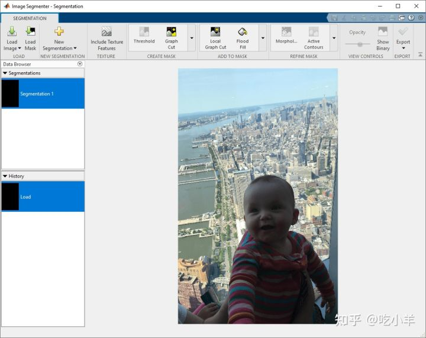
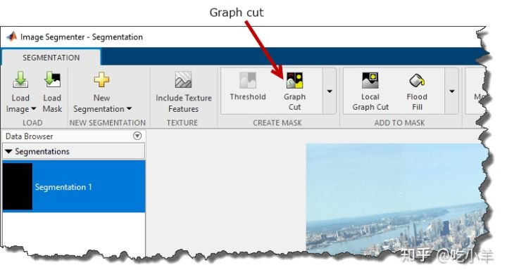
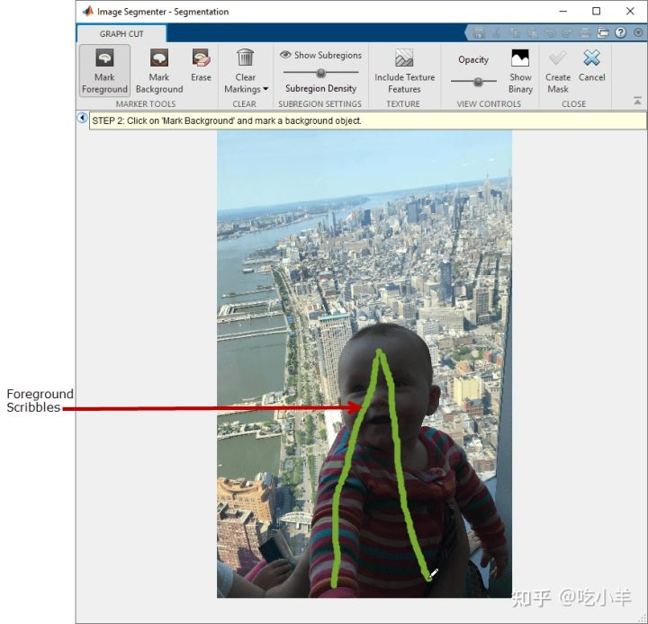
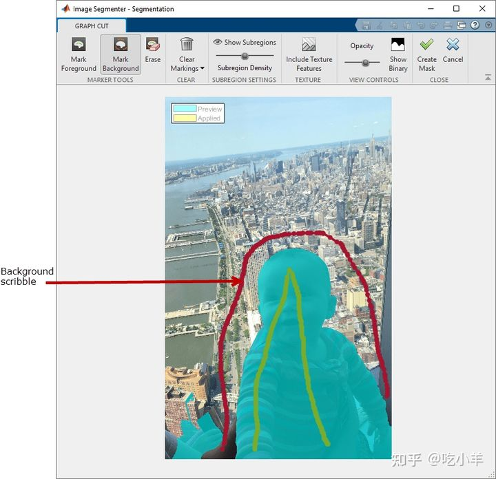
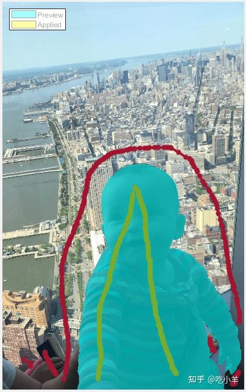
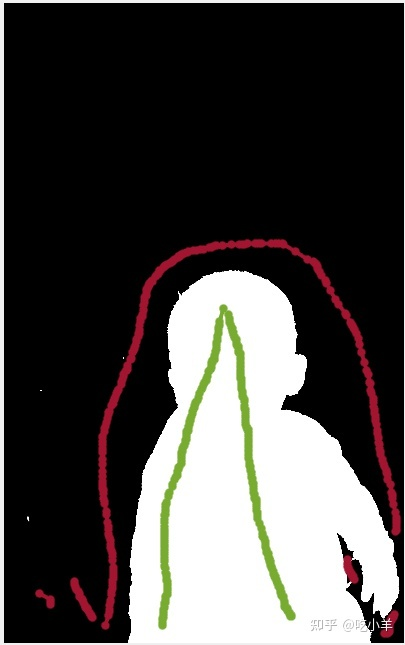
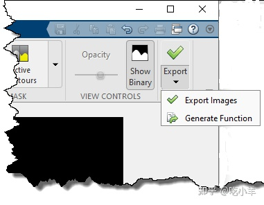

Home
本示例展示了如何使用 Image Segmenter 应用程序中的 Graph Cut 选项来分割图像。Graph Cut是一种半自动分割技术，可用于将图像分割为前景和背景元素。Graph Cut分割不需要很好的初始化。您可以在图像上画线，称为涂鸦，以确定您想要的前景和背景。图像分割器根据您的涂鸦自动分割图像并显示分割的图像。您可以通过在图像上绘制更多涂鸦来细化分割，直到您对结果感到满意为止。
Graph Cut 技术将图论应用于图像处理以实现快速分割。该技术创建了一个图像图，其中每个像素都是一个由加权边连接的节点。像素相关的概率越高，权重就越高。该算法沿弱边缘进行切割，实现图像中物体的分割。Image Segmenter 使用一种特殊的 Graph Cut 算法，称为lazysnapping。
将图像加载到图像分割器应用程序中
将图像读入工作区。对于此示例，将示例图像读baby.png入工作区。
b = imread('baby.jpg');
从 MATLAB 工具条中，打开Image Segmenter应用程序。在应用程序选项卡上的图像处理和计算机视觉部分，单击图像分割器:

在应用程序工具条上，单击加载图像，然后选择从工作区加载图像。在从工作区导入对话框中，选择您读入工作区的图像。该图像分段器的应用所显示您所选择的图像。

您还可以使用imageSegmenter命令打开应用程序，指定图像：
imageSegmenter(b);
使用Graph Cut分割图像
在 Image Segmenter 应用程序工具条上，选择Graph Cut。

图像分割器为 Graph Cut 分割打开一个新选项卡。作为 Graph Cut 分割的第一步，标记您认为属于前景的图像元素。当 Image Segmenter 打开 Graph Cut 选项卡时，它会预先选择Mark Foreground选项。要将对象标记为前景，请在对象上画一条线（也称为涂鸦）。绘制线条时，请尝试在要分割的对象中包含所有不同的值。您可以根据需要绘制任意多条单独的线。如果您对绘制的线条不满意，可以随时对其进行编辑。单击擦除并将光标移动到要删除的行的任何部分上。如果要重新开始，请单击清除标记。

接下来，单击标记背景并绘制涂鸦以标记要作为背景的图像元素。绘制完线条后，图像分割器会立即执行分割（以蓝色显示）。

要细化分割，请继续绘制前景和背景线。例如，图像底部附近有几个区域需要从前景中移除。要解决这些问题，请在图像的这些部分绘制额外的背景线。

要更好地查看分割效果，请单击Show Binary。

当您对分割感到满意时，单击Graph Cut 选项卡上工具条中的Create Mask。该应用程序将关闭 Graph Cut 选项卡并使您返回到 Segmentation 选项卡。
将蒙版图像保存到工作区
当您返回主分割选项卡时，您可以使用工具来优化蒙版图像，例如 Morphology 和 Active Contours。要保存蒙版图像，请单击导出。您还可以使用“导出”选项获取用于创建分割的图像分割器应用程序的代码。

======================================================================
我的测试结果及程序
下面是我测试的代码：

注：本文根据MATLAB官网内容修改而成。